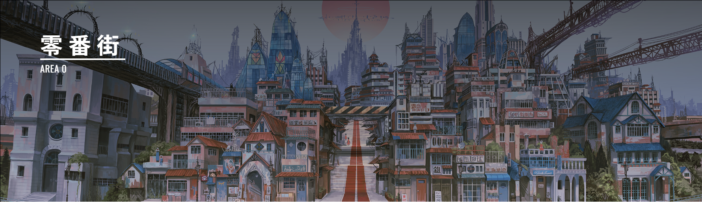
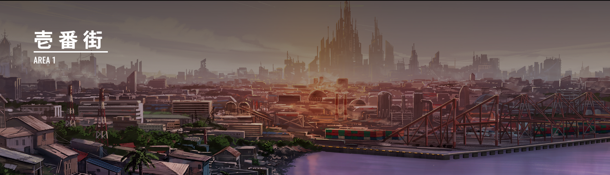
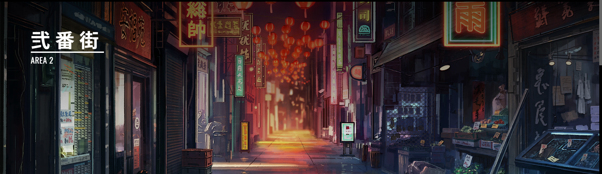
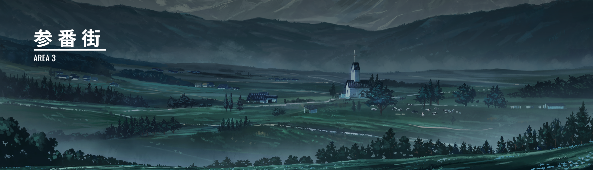
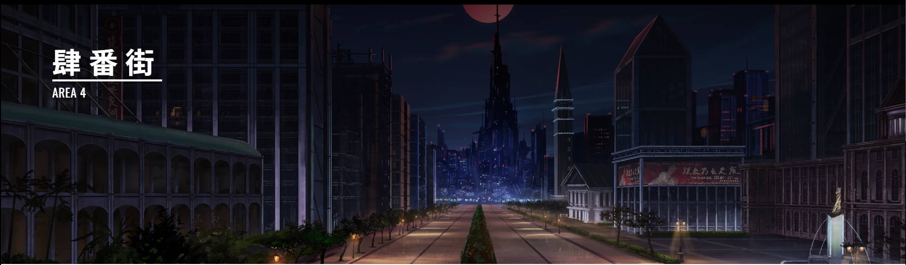
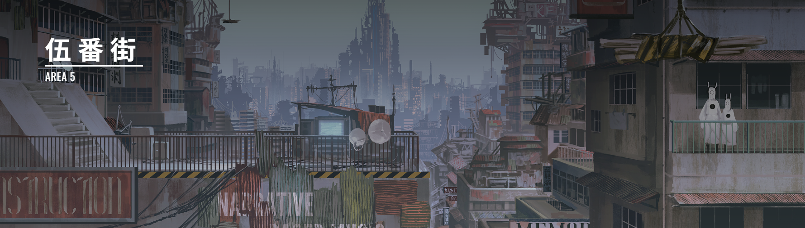
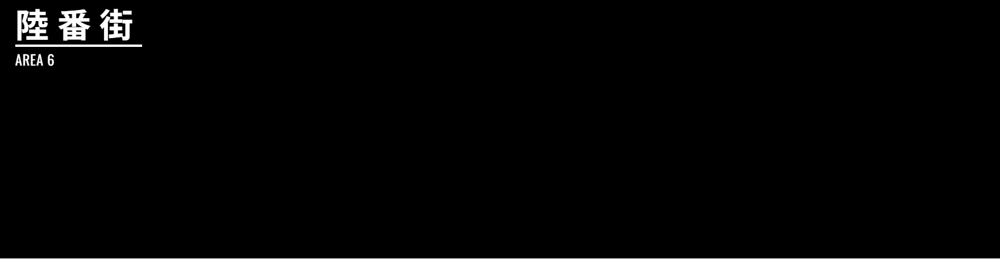

AREA 00
零番街
街の入口を思わせる、建物が幾重にも連なる景観。高架や入り組んだ建築がつくり出す、独特の都市風景が広がっている。

AREA 01
壱番街
遠くにそびえる高層建築と、広く続く市街地。都市の規模と、その奥へ続いていく景色を感じられる街区。

AREA 02
弐番街
看板や提灯の光が路地を彩る、賑やかな街並み。昼とは違う表情を見せる、印象的な夜の風景が広がる。

AREA 03
参番街
山並みと草原に囲まれた、静かな風景。遠くに見える建物と広い空が、都市部とは異なる穏やかな時間を感じさせる。

AREA 04
肆番街
夜の大通りに高層ビルが立ち並ぶ、静謐で近未来的な街並み。光と影が織りなす景色が印象に残る。

AREA 05
伍番街
建物や設備が複雑に重なり合う、密度の高い街区。遠景に広がる都市の姿と、手前の生活感ある風景が対照的。

AREA 06
陸番街
ほかの街区とは異なる、暗く静かな景観。画像からも伝わる隔絶された雰囲気が、この場所への想像をかき立てる。